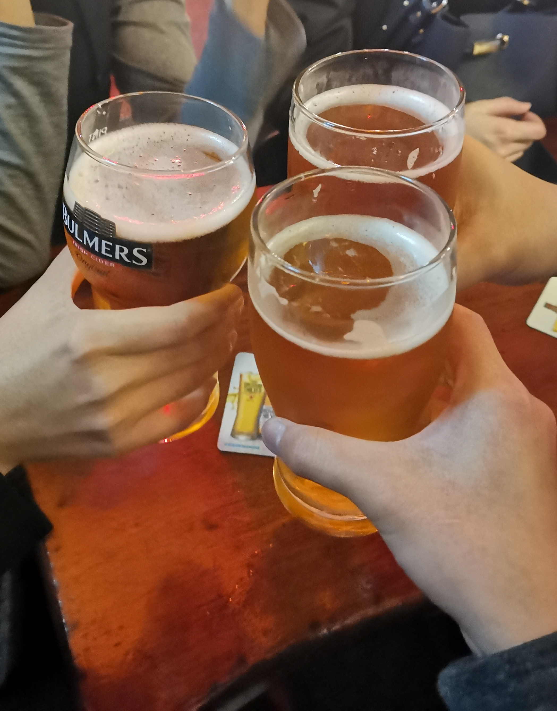

Eyre Square welcomed my arrival, by bus, with a protest against global warming. It was my first experience witnessing such a scene, and intrigued, I did stay for a little while out of curiosity.

The St Nicholas' Church and its wonders, the stained glass and the carvings, the architecture and the history behind it. It was a good experience, though I'm still unsure if photos are allowed. I donated one-and-a-half euro to the church too, on reasons too hilariously tedious to explain here.
There were musicians on the boat, and this scene started off the night of Irish music which I was about to experience.

This is the Hall of the Red Earl, and here was a performance of old Irish folk tunes from the Medieval times, and it so gave me the atmosphere of Skyrim and Westeros.

A performance of Irish culture where my ears got given two songs which are now indelible marks in my head, Kilkelly Ireland and Down By The Salley Gardens, the latter which was a song taught to me by Teacher Vivien herself.
I remember my head swinging after drinking a cup of apple cider, perhaps too quickly. But the band that was playing at the bar that night was amazing, and the tunes were sublime and inspirational. I aspire to one day make a hundred of my own tunes as well for My World.